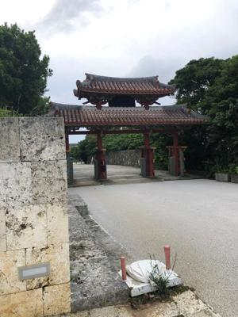
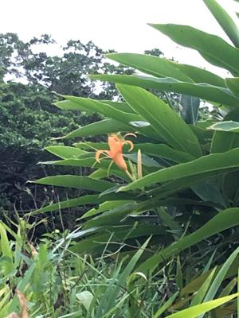
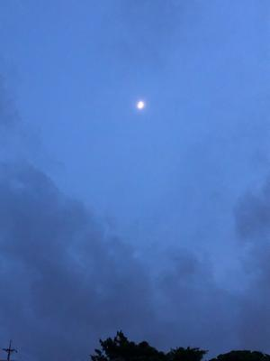

うるがいの話 ある日
最新: 詐欺SMS（スミッシング）
うるがいとは 前提知識です
カニの画像をクリックすると『うるがいの話』サイトを表示します
うるがい(ｳﾙｶﾞｲ urugai)とは、『もずくがに』の名前でとても大きくなります。
たながー（ﾀﾅｶﾞｰtanagaa）とは手長えびのことで、何種類かあり大きいのは車 エビぐらいになります。
ぶながー(bunagaa)とは、赤い髪の毛、赤い身体、そして身長は１ｍ２０ｃｍ ぐらい、川の蟹を食べているの目撃された。場所は沖縄県国頭郡大宜味村のと ある村僕の隣近所に住んでいる爺さんから、聞いた話です。
2021年09月13日 (月）
詐欺SMS（スミッシング）
16:57



スマホに「やまと運輸よりお荷物を発送しましたが、宛先不明になっておりま
す下記よりご確認ください。」のＳＭＳが届いていた。ん！、詐欺かとネット
で調べる。ヤマト運輸を装った詐欺ＳＭＳだとのこと、ちなみにメッセージを
みるとその後、どうなるのだろう、ネットでは
iPhoneなどiOSデバイスの場合はApple ID（メールアドレス、パスワード）や
クレジットカード情報といった個人情報の搾取を目的としたページに遷移しま
す。
世の中には悪い人がいるもんだ、いい人もいるが。昨日首里城を走る、体が重
い、でも走れた。『感謝』とランの後は、道にお辞儀をする。いつまで走れる
のだろうか、今日は雨は降ったり、止んだりの天気、明け方は雷がうるさかっ
た。で、無理せず、今日は走らないことにする（外では小雨が降っている）。